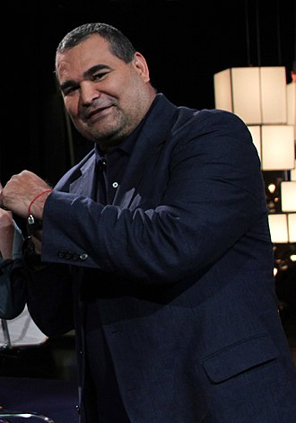
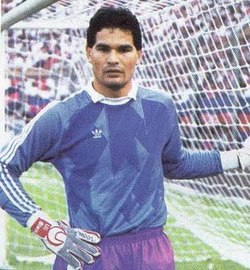

José Luis Félix Chilavert González (Luque, 27 de julio de 1965) es un exfutbolista paraguayo. Reconocido por la IFFHS como el mejor portero del mundo en tres ocasiones: en 1995, 1997 y 1998 Es el primer portero en la historia en marcar un gol de tiro libre y único portero hasta la fecha en marcar un hat-trick. Durante su carrera, anotó 62 goles, convirtiéndose en el segundo portero más goleador de todos los tiempos y el portero más goleador del mundo en su momento. Es considerado un ícono del Club Atlético Vélez Sarsfield y de la selección de fútbol de Paraguay. La IFFHS lo ha posicionado como el sexto mejor portero del siglo xx y el segundo mejor portero sudamericano del siglo XX.
En 2000, recibió el Premio Konex como uno de los cinco mejores futbolistas de la década en Argentina.Chilavert debutó en la Primera División de Paraguay en 1980 defendiendo la portería del Club Sportivo Luqueño con tan solo 15 años de edad. En 1983, logra el subcampeonato con el Sportivo Luqueño, participando luego en la Copa Libertadores de América del año 1984; luego, el mismo año, pasa a defender la portería del Club Guaraní, que se consagra campeón de primera división.
Llegó a la Argentina en 1985 contratado por San Lorenzo de Almagro, con el cual jugó 250 partidos y ganó la Liguilla Pre-Libertadores. En su paso por el club de Boedo, se recuerda el asombro que provocaba su guapeza por aquel entonces, algo que lo llevaba a veces a jugar con mucha brusquedad, así como su atrevimiento a lanzar tiros libres, aunque no marcó ningún gol en el club "santo". Esa brusquedad lo llevó a partirle la nariz al peruano Franco Navarro, que por entonces estaba en Independiente, pero también se lo recuerda por pelear por justos reclamos de los jugadores ante los dirigentes.

En 1988, fue transferido al Real Zaragoza de España, donde permaneció hasta 1991, ya en ese club marcó un gol de penalti en un partido frente a la Real Sociedad de Fútbol, aunque a continuación, el arquero recibió un gol luego de un saque del mediocampo, saque realizado por Jon Andoni Goikoetxea.
En su regreso a Argentina fue ofrecido nuevamente a San Lorenzo de Almagro, pero el club de Boedo lo rechazó, prefiriendo los dirigentes de entonces a Oscar Passet.
Recaló entonces en Vélez Sarsfield, club donde viviría su etapa futbolística más exitosa. Es así que, en 1992, bajo la conducción técnica de Eduardo Luján Manera, Vélez Sarsfield, ya de la mano de Chilavert, fue subcampeón del Torneo Clausura, posteriormente se consagró campeón de la Liguilla pre-Libertadores, pero luego el sueño de jugar la Copa se vio frustrado al perder 1-0 con Newell's Old Boys en la instancia final.
Con la llegada de Carlos Bianchi en 1993, Vélez Sarsfield ganó una seguidilla de títulos en los que Chilavert fue una de las principales figuras, no sólo por sus atajadas decisivas, sino también por sus goles y su influencia positiva en el plantel.
En Vélez Sarsfield convirtió su primer gol el día en que se consagró campeón del Torneo Clausura 1992-93, fue exactamente el 8 de junio de 1993.
Es el primer arquero que convirtió un gol de tiro libre en el mundo, fue el 2 de octubre de 1994 ante Deportivo Español (actualmente Social Español). Posteriormente le convirtió dos goles al exarquero colombiano de Vélez Sarsfield, Carlos Fernando Navarro Montoya, por ese entonces en el Boca Juniors y uno a Germán Burgos, arquero de River Plate, desde atrás de mitad de cancha, entre otros. Al mismo Burgos, volvió a marcarle un gol de tiro libre unos cinco meses después pero esta vez jugando para la selección de Paraguay, durante un partido por eliminatorias mundialistas.
Es el primer arquero que convirtió tres goles en un partido, y lo consiguió jugando para Vélez Sarsfield en la victoria por 6-1 a Ferro Carril Oeste, el 28 de noviembre de 1999. Esta cita histórica quedó marcada en el récord guinness. Jugó 347 cotejos nacionales e internacionales durante su carrera en "El Fortín", marcando 48 goles.
En 1994, ganó la Copa Libertadores de América y la Copa Intercontinental con Vélez Sarsfield, en la recordada final frente al AC Milan que el equipo de Liniers ganó 2-0 con goles de Roberto Trotta y Omar Asad.
En la temporada 1995-96 se coronó campeón del Torneo Apertura y el Torneo Clausura. En 1996, los títulos fueron la Copa Interamericana y la Supercopa Sudamericana. Para el año 1997, el título obtenido fue la Recopa Sudamericana en Kōbe, (Japón) frente a River Plate y, en 1998, el Torneo Clausura.
En noviembre de 2000, es traspasado al Racing de Estrasburgo donde ganó la Copa de Francia y en 2003 conquistó su último título con Peñarol de Uruguay.
En el año 2004, volvió a Vélez Sarsfield para jugar exclusivamente la Copa Libertadores de América y posteriormente retirarse en un encuentro "homenaje". Su último partido con el conjunto de Liniers, fue ante el Unión Atlético Maracaibo de Venezuela, cayendo derrotado por goleada de 4-2, partido celebrado el 22 de abril de ese año en el estadio Pachencho Romero. El día 15 de noviembre de 2004, José Luis Chilavert tuvo su partido despedida en Buenos Aires con la participación de grandes figuras del fútbol internacional (Iván Zamorano, Carlos Valderrama, René Higuita, Enzo Francescoli, Álex Aguinaga, Celso Ayala, Claudio Morel, Celso Esquivel, Marco Etcheverry, entre otras figuras del club de Liniers, campeones de América y del Mundo), brindando un espectáculo en el Estadio José Amalfitani acorde a las circunstancias.
Con la selección de fútbol de Paraguay jugó desde 1989 un total de 74 partidos marcando 8 goles. El primer tanto de Chilavert en su carrera internacional fue el 27 de agosto de 1989 en un partido de eliminatorias al Mundial de 1990 frente a Colombia, marcando desde el punto penal.
El portero participó en los Mundiales de 1998 y 2002. En la Copa de 1998 su selección fue eliminada en octavos de final con gol de oro por el a la postre campeón, Francia. En la Copa Mundial de 2002 los paraguayos fueron eliminados en la misma ronda por Alemania, a la postre subcampeón del mundial.
Tal vez el gol más recordado de su carrera con su selección es el que marcó de falta ante Argentina, el 1 de septiembre de 1996, en el estadio Monumental, en las eliminatorias al Mundial de Francia 1998. El portero albiceleste en aquel empate era Germán Burgos, el mismo a quien, poco tiempo atrás, en el Clausura le había marcado otro gol que también pasó a la historia por la distancia desde donde Chilavert efectuó su remate, unos cuatro metros detrás del medio campo.
Chilavert se enfrentó a muchos problemas y polémicas con su selección. Durante un partido de las eliminatorias a Francia 1998 contra Colombia, sin aguantarse por una falta que le hizo Faustino Asprilla, fue al banquillo y lo golpeó; Víctor Hugo Aristizábal se lanzó y lo pateó para defender a Asprilla, por lo que fueron expulsados Chilavert, Asprilla y Aristizábal.
Durante un partido de las eliminatorias hacia Corea-Japón 2002, escupió al jugador brasileño Roberto Carlos por calificar de "indios" a él y a sus compañeros de equipo. La FIFA lo sancionó con cuatro jornadas de suspensión por este incidente. Chilavert se retiró de la selección de Paraguay en 2003.